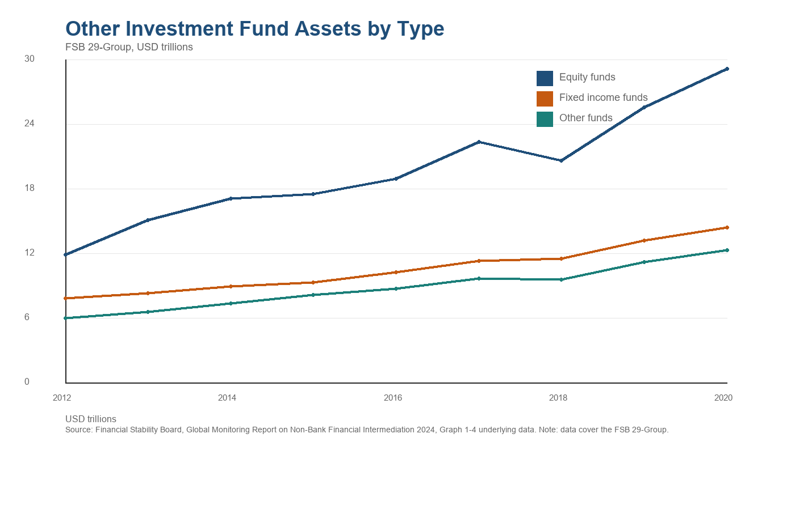
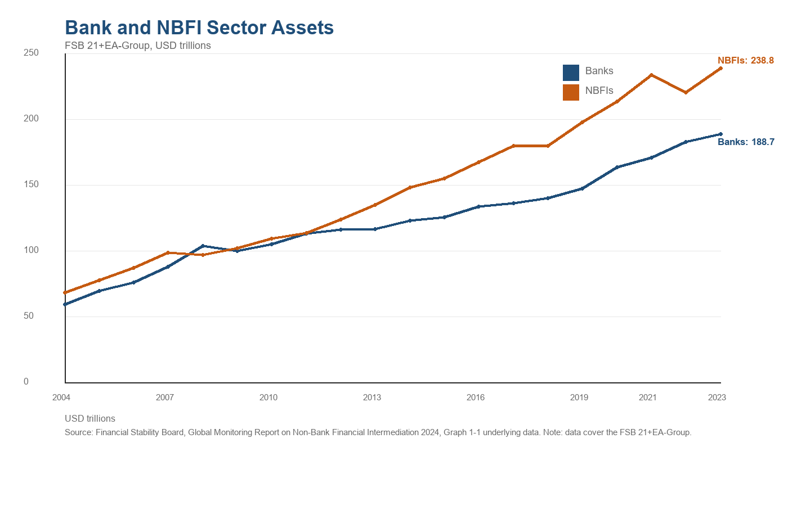
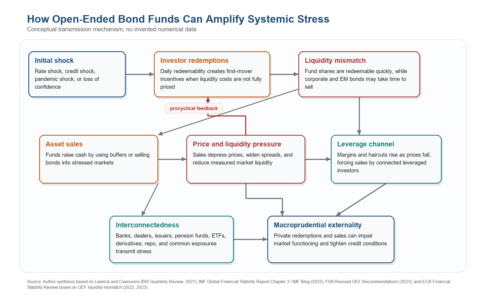
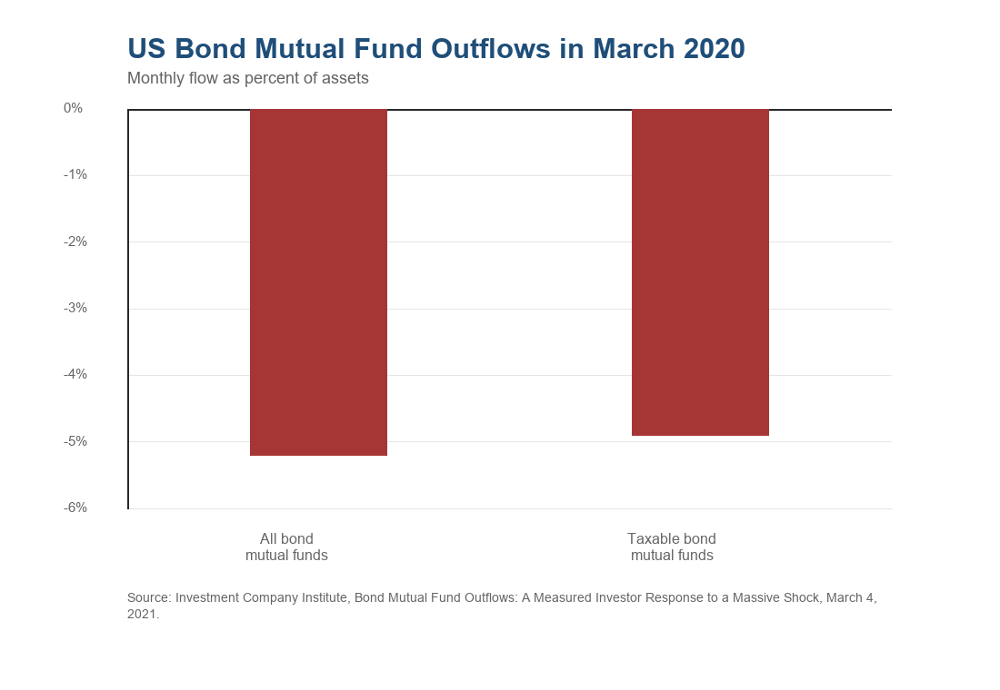

Macroprudential Regulation for Open-Ended Bond Funds
This paper examines whether macroprudential regulation should be extended to non-bank financial institutions, with a focused application to open-ended bond funds (OEBFs). The argument is that OEBFs perform useful market-based finance functions, but their promise of frequent redemptions against portfolios of less liquid bonds creates a structural liquidity mismatch that can amplify stress when investors run together. The paper synthesizes academic evidence, international policy reports, and three stress episodes: the 2008 money market fund crisis, the March 2020 dash for cash, and the United Kingdom LDI crisis of 2022. The conclusion is not that OEBFs should be regulated like banks, but rather that macroprudential regulation should be extended through an activity-based framework that aligns redemption terms, liquidity management tools, leverage limits, stress testing, and central bank backstops with the systemic externalities of market-based finance.
1. Introduction
Over the past two decades, the global financial system has become more market based. Banks remain central to credit creation and payment services, but a large share of credit intermediation, maturity transformation, and liquidity provision now takes place through asset managers, money market funds, hedge funds, pension funds, insurers, finance companies, and other non-bank financial institutions. The FSB monitoring exercise shows that the NBFI sector now accounts for roughly half of global financial assets, with public reporting for 2024 placing the sector above $250 trillion (Financial Stability Board [FSB], 2025). This growth has supported deeper capital markets and has diversified financing away from banks. It has also moved important sources of systemic risk outside the perimeter of bank-centered macroprudential regulation.
The research question is therefore direct: should the macroprudential regulatory framework be expanded to address systemic risks arising from non-bank financial institutions? This paper answers yes, but with an important qualification. Macroprudential policy should extend to NBFIs when their activities create externalities that can impair market functioning or credit provision. It should not mechanically copy bank regulation. Open-ended bond funds are the clearest case for a tailored approach because they combine daily or frequent redemption rights with portfolios that may become hard to sell in stress. Their vulnerability is less about deposit-like money creation than about liquidity transformation, correlated selling, and fire-sale feedback loops.
The focus on OEBFs is also practical. Bond funds grew rapidly after the global financial crisis as low interest rates encouraged investors to search for yield and as tighter bank regulation reshaped the provision of credit. Corporate bond markets became larger, more intermediated through funds, and more sensitive to redemptions at exactly the moment when dealer balance sheets became less willing to absorb inventory in stress. The March 2020 episode showed how stress can propagate from end investors to bond markets, with fund redemptions amplifying dislocations in corporate bond pricing and liquidity (Falato et al., 2021).
The paper proceeds as follows. The literature review explains why fund fragility arises and why bank-only macroprudential policy can push risk toward NBFIs. The institutional background describes the growth of market-based finance and the distinct structure of OEBFs. The risk section analyzes liquidity mismatch, leverage, and procyclicality. The case studies show how these channels appeared in 2008, 2020, and 2022. The final sections evaluate policy options and recommend an activity-based macroprudential framework centered on liquidity pricing, redemption design, leverage monitoring, and system-wide stress testing.
2. Literature Review
The academic literature on open-ended funds begins from a simple coordination problem. Investors in a fund that holds illiquid assets may prefer to redeem before others because early redeemers receive net asset value while the trading costs of liquidation are left partly with investors who remain. Chen, Goldstein, and Jiang (2010) show that funds holding less liquid assets exhibit stronger outflow sensitivity after poor performance, consistent with payoff complementarities among investors. Goldstein, Jiang, and Ng (2017) extend this logic to corporate bond mutual funds and find a concave flow-performance relationship — outflows react more strongly to bad performance than inflows react to good performance — especially for funds with more illiquid portfolios.
This mechanism matters because fund outflows are not merely private transactions between investors and managers. If many funds sell similar assets at the same time, prices can fall below fundamentals, liquidity premia can spike, and other leveraged or mark-to-market investors may be forced to delever. Coval and Stafford (2007) document price pressure from mutual fund fire sales, while Falato et al. (2021) show that corporate bond funds experienced major outflows during the COVID-19 crisis and that fragility was most pronounced among funds exposed to illiquid assets and vulnerable sectors. The empirical literature supports the core premise of this paper: OEBF liquidity risk can be systemic because individual redemption decisions can impose costs on markets and other investors.
A second strand of literature studies regulatory perimeter effects. Claessens et al. (2021) find that tighter domestic macroprudential policy is associated with a larger NBFI share and lower bank assets, consistent with the possibility that financial intermediation shifts outside the banking sector when regulation binds more strongly on banks. This does not imply that bank regulations are a mistake. It implies that macroprudential policy should follow systemic activity rather than legal form.
Policy institutions have reached similar conclusions. Adrian and Jones (2018) distinguish market-based finance from older shadow banking by emphasizing diverse structures, collateral chains, and sponsor support. Aramonte, Schrimpf, and Shin (2023) place leverage and margin dynamics at the center of NBFI stress propagation. Lewrick and Claessens (2021) apply this framework to open-ended bond funds, showing that despite the availability of liquidity management tools, funds engaged in significant asset sales during the March 2020 stress episode. Giuzio et al. (2025) argue that NBFI resilience is important for monetary policy transmission, as the growing role of market-based finance implies that disruptions in capital markets can weaken the pass-through of policy to the real economy. The FSB revised its recommendations for open-ended funds in 2023, calling for enhanced liquidity reporting, closer alignment between asset liquidity and redemption terms, broader use of liquidity management tools, and strengthened stress testing frameworks (FSB, 2023).
3. Institutional Background
Open-ended bond funds pool investor money and invest primarily in government, corporate, high-yield, emerging market, or mixed fixed-income securities. Investors usually redeem shares at net asset value on a daily or frequent basis. The fund does not promise par redemption like a bank deposit, and investors bear market risk. Yet the redemption mechanism can still create liquidity pressure because the fund must raise cash when redemptions arrive. If cash buffers are low or the portfolio contains bonds that trade infrequently, the fund may sell its most liquid assets first, leaving remaining investors with a less liquid portfolio, or may sell less liquid assets into stressed markets and contribute to price pressure.
The institutional setting has changed since 2008. Post-crisis bank reforms improved bank capital and liquidity, but they also increased the relative importance of market-based finance. Dealers became more constrained in their capacity to warehouse risk, while investment funds became larger holders of corporate and sovereign bonds. This structure is not inherently fragile. Funds can diversify risk, provide professional asset allocation, and connect savers to borrowers. The concern is that the same structure can be procyclical when liquidity appears abundant in normal times but disappears during stress.

Figure 1: Other Investment Fund Assets by Type (FSB 29-Group, USD trillions). Source: Financial Stability Board, Global Monitoring Report on Non-Bank Financial Intermediation 2024.

Figure 2: Bank and NBFI Sector Assets (FSB 21+EA-Group, USD trillions). Source: Financial Stability Board, Global Monitoring Report on Non-Bank Financial Intermediation 2024.
The scale of this shift is evident in FSB monitoring reports. NBFI assets declined to $217.9 trillion in 2022 amid valuation effects from higher interest rates, before increasing to roughly $250 trillion in 2023 and $256.8 trillion in 2024. Over the same period, the NBFI share of global financial assets rose from 47.2 percent to 51.0 percent (FSB, 2023, 2024, 2025). These trends point to a clear expansion in the perimeter of financial intermediation, implying that macroprudential frameworks must adapt to account for the growing systemic importance of non-bank financial institutions.
A useful way to frame the institutional problem is the FSB’s economic-function approach. The FSB’s 2013 framework identifies open-ended funds and money market funds as part of Economic Function 1, where the core risk is susceptibility to runs and the main policy tools are liquidity rules, fees, gates, and redemption controls (FSB, 2013). This shifts the question away from whether a fund is bank-like in every respect. The relevant question is whether its economic function creates runnable claims on market liquidity.
Macroprudential regulation has traditionally focused on banks because banks combine leverage, runnable short-term liabilities, credit creation, and payment system functions. OEBFs differ from banks in all of these respects, which is why bank-style capital requirements are often a poor fit. A fund’s liabilities are equity-like claims rather than deposits, and losses pass through to investors. The systemic issue is not insolvency in the bank sense — it is disorderly liquidation and correlated portfolio adjustment under stress. Regulation should therefore target the redemption and liquidity channel rather than treating OEBFs as if they were depository institutions.
4. Sources of Systemic Risk in OEBFs
4.1 Liquidity Mismatch
Liquidity mismatch is the central vulnerability. Many bond funds offer daily redemption even when their portfolios contain securities that may require days or weeks to sell at reasonable prices in stressed conditions. The mismatch is not captured by average trading volume alone because bond market liquidity is state dependent. A corporate bond that appears liquid during calm periods may become difficult to sell when volatility rises, dealer intermediation capacity shrinks, and many funds attempt to raise cash simultaneously.
4.2 Leverage
Leverage can intensify the same mechanism even when leverage is not large at the fund level. Some funds use derivatives, repo, or borrowing for duration management, currency hedging, or return enhancement. More importantly, OEBFs may be connected to leveraged investors who use fund shares, ETFs, or underlying bonds as part of broader trading strategies. When volatility rises, margins and haircuts can increase at the same time that asset values fall, reducing debt capacity and forcing sales. The UK LDI episode was not an OEBF crisis in the narrow sense, but it illustrated how leveraged non-bank strategies can turn a yield shock into forced selling of government bonds.
4.3 Procyclicality
Procyclicality arises because fund flows, risk management, and market liquidity often move in the same direction. Good performance and low volatility attract inflows, compress spreads, and encourage funds to hold less liquid assets for yield. Bad performance reverses the process. Investors redeem, managers sell assets, prices fall, and measured risk rises. This feedback loop is macroprudential because the private incentive to redeem early does not internalize the effect on market depth, other funds, borrowers, or central bank crisis management.
4.4 Interconnectedness
Interconnectedness completes the systemic channel. OEBFs hold securities issued by corporations, banks, and governments. Their sales can raise funding costs for issuers and reduce the availability of credit. They also interact with banks through credit lines, derivatives, custody, repo, and holdings of bank debt. These connections mean that stress originating in funds can transmit to banks and vice versa, even without a traditional deposit run.

Figure 3: Conceptual transmission mechanism — how open-ended bond funds can amplify systemic stress. Source: Author synthesis based on Lewrick and Claessens (BIS Quarterly Review, 2021), IMF Global Financial Stability Report (2022), FSB Revised OEF Recommendations (2023), and ECB Financial Stability Review (2022, 2023).
5. Case Studies
The three episodes below involve different legal structures — money market funds in 2008, corporate bond funds in 2020, and liability-driven investment funds in 2022. They are used here not because each one is an open-ended bond fund, but because together they isolate a transmission channel that does not depend on legal form. In each case a first-mover advantage or a collateral spiral converted individual liquidity demands into correlated selling that strained market functioning. The fact that the same mechanism recurs across very different vehicles is itself the argument for regulating the activity of liquidity transformation rather than the charter of any single fund type.
The 2008 money market fund crisis is not a bond fund episode, but it remains the canonical warning about open-ended funds and run dynamics. When the Reserve Primary Fund broke the buck after Lehman Brothers failed, investors rushed out of prime money market funds. The episode showed that funds outside the banking sector could create systemic pressure when investors perceived a first-mover advantage. Public support and later reforms reduced some vulnerabilities, but the broader lesson applies to OEBFs: a fund structure that appears stable in normal times can become runnable when liquidity costs are not allocated to redeeming investors.
The March 2020 dash for cash is the most relevant modern case for OEBFs. As the pandemic shock hit, investors first shifted from risky assets toward safer assets, then sold even safe assets to raise cash as margin calls, corporate credit-line draws, money market stress, and fund redemptions interacted. Kashyap (2020) describes this as a liquidity multiplier — what one institution treats as a liquid asset can be another institution’s runnable liability. The FSB’s holistic review reached a similar conclusion and emphasized that some investors in open-ended funds had incentives to redeem ahead of others (FSB, 2020). Falato et al. (2021) find that corporate bond fund outflows were sustained and most severe for funds with illiquid assets, greater fire-sale vulnerability, and exposure to sectors directly hurt by the crisis. ICI reports that investors redeemed 5.2 percent of all US bond mutual fund assets in March 2020 (Investment Company Institute, 2021).

Figure 4: US Bond Mutual Fund Outflows in March 2020 (monthly flow as percent of assets). Source: Investment Company Institute, Bond Mutual Fund Outflows: A Measured Investor Response to a Massive Shock, March 4, 2021.
It is worth taking the industry view seriously rather than dismissing it. The Investment Company Institute argues that bond fund investors in March 2020 redeemed in rough proportion to an unprecedented shock, that they retained close to 95 percent of their assets, and that funds met redemptions largely by selling their most liquid holdings rather than dumping illiquid bonds. On this reading, funds absorbed a shock rather than caused one, and rules such as mandatory swing pricing would impose real costs on ordinary savers to solve a problem the data do not clearly establish. This objection has force, but it does not defeat the macroprudential case. Systemic risk is not a claim about the behavior of the average investor or the median fund. It is a claim about tail outcomes and about externalities that individual investors do not internalize. A redemption that is proportionate and rational for one investor can still be destabilizing in aggregate when many funds sell correlated assets into a market where dealer balance sheets are already strained. The fact that funds sold liquid assets first is not reassuring either, since selling the most liquid assets to meet early redemptions is exactly what leaves remaining investors with a less liquid portfolio and sharpens the incentive to run.
The UK LDI crisis of 2022 illustrates the leverage and procyclicality channel in market-based finance. After a sharp rise in gilt yields, LDI funds and pension schemes faced collateral calls and sold gilts into a falling market. The Bank of England concluded that LDI funds had insufficient resilience to the speed and scale of the move in yields, and it launched a temporary, targeted gilt purchase operation to restore market functioning (Bank of England, 2022, 2023). Although LDI funds differ from OEBFs, the episode strengthens the case for system-wide stress testing of non-bank strategies that can produce forced selling in core bond markets.
| Episode | Main Vulnerability | Transmission Channel | Policy Lesson |
|---|---|---|---|
| 2008 Money Market Funds | Run-like redemptions | First-mover advantage and loss of confidence | Need for structural reforms (floating NAV, liquidity fees and gates) to address run risk |
| March 2020 Dash for Cash | Liquidity mismatch | Bond fund outflows and forced sales in illiquid markets | Anti-dilution tools and central bank backstops need ex ante design |
| UK LDI Crisis, 2022 | Leverage and collateral calls | Forced gilt sales and price-yield feedback | Incorporate non-bank leverage and margin dynamics into stress testing and liquidity frameworks |
Table 1: Lessons from Recent NBFI Stress Episodes
6. Policy Analysis
The main policy choice is between entity-based regulation, activity-based regulation, and a wider public backstop. Entity regulation gives supervisors depth and stronger controls, but it is narrow and politically difficult to apply beyond a small number of firms. Activity regulation gives broader coverage and better follows changing market structures, but it may have weaker controls when no single supervisor owns the whole chain. Backstops can stabilize markets, but they create moral hazard if they are not paired with ex ante resilience requirements.
An activity-based approach is best suited to OEBFs, with entity-based designation reserved for very large fund complexes or firms whose distress would be independently systemic. Activity-based regulation would govern the combination of asset liquidity, redemption terms, liquidity management tools, and leverage regardless of the legal label of the fund. The FSB’s 2023 recommendations move in this direction by calling for a categorization framework that links redemption terms to asset liquidity and by encouraging stronger use of anti-dilution liquidity management tools (FSB, 2023). This approach also reduces regulatory arbitrage because the rule follows the liquidity transformation activity rather than the charter of the institution.
| Policy Area | Recommended Design | Rationale | Source Basis |
|---|---|---|---|
| Asset liquidity classification | Classify OEBFs by actual and stressed asset liquidity | Daily redemption is riskier when portfolios hold assets that become hard to sell in stress | FSB 2023, ECB 2022 |
| Anti-dilution tools | Use swing pricing, anti-dilution levies, or redemption fees | Redeeming investors should bear transaction and market-impact costs | FSB 2023, IOSCO 2023, Bank of England 2021 |
| Redemption terms | Align notice periods and settlement terms with asset liquidity | Quantity tools can slow forced sales when price tools are insufficient | FSB 2023 |
| Stress testing | Run fund-level and system-wide liquidity stress tests | Common holdings and correlated redemptions can be missed by fund-level tests | ECB 2023, FSB 2023 |
| Leverage and margin reporting | Report derivatives, repo, collateral calls, and margin schedules | Forced selling can come from collateral dynamics even outside the fund balance sheet | FSB 2020, Aramonte et al. 2023 |
Table 2: Macroprudential Policy Design for Open-Ended Bond Funds
The policy toolkit should combine price tools, quantity tools, information tools, and backstops. Price tools such as swing pricing and anti-dilution levies reduce first-mover advantage by making redeeming investors bear estimated transaction and market-impact costs. Quantity tools such as notice periods, settlement delays, and gates can slow redemptions when asset sales would be disorderly, but they risk stigma and preemptive runs if investors expect them to be activated suddenly. Information tools such as liquidity bucketing, redemption coverage ratios, leverage reporting, and system-wide stress tests allow supervisors to see common exposures before stress arrives. Central bank backstops are necessary but dangerous. The appropriate compromise is a market-functioning backstop with guardrails — temporary access, penalty pricing, narrow eligibility, strong disclosure, and loss-bearing by investors and managers — preserving the public good of market stability while reducing expectations of unconditional support.
7. The United States Policy Debate
The debate between entity-based and activity-based regulation has moved into concrete rulemaking in the United States since 2023. In July 2023 the Securities and Exchange Commission adopted reforms to money market funds leaning toward activity-based liquidity pricing. The reforms require institutional prime and institutional tax-exempt funds to impose a mandatory liquidity fee when daily net redemptions exceed a set threshold, remove the earlier link between liquidity fees or gates and a fund’s weekly liquid asset level, and raise minimum daily and weekly liquid asset requirements (U.S. Securities and Exchange Commission, 2023).
The fate of the parallel proposal for ordinary open-ended funds is a cautionary tale. In November 2022 the Commission proposed to require mandatory swing pricing, a hard close on trading, and stricter liquidity classification for open-ended funds other than money market funds and exchange-traded funds. After heavy and bipartisan opposition from the fund industry and from members of Congress, the Commission declined to adopt swing pricing or the hard close in August 2024 and finalized only more frequent portfolio reporting and service-provider disclosure (U.S. Securities and Exchange Commission, 2024). The lesson is not that swing pricing is wrong in principle. It is that a price tool which depends on credible calibration is also politically and operationally fragile, which strengthens the case for combining anti-dilution tools with quantity tools, reporting, and predefined backstops rather than relying on any single instrument.
At the entity level, the Financial Stability Oversight Council revived its dormant designation power in November 2023, finalizing an analytic framework for identifying financial stability risks and reversing 2019 changes that had made designation more difficult (Financial Stability Oversight Council, 2023). The framework names liquidity and maturity mismatch, leverage, and interconnectedness as primary channels of risk — the same vulnerabilities this paper attributes to open-ended bond funds. Taken together, the United States is pursuing both tracks: applying activity-based liquidity rules to money market funds while restoring an entity-based backstop for firms whose distress would be independently systemic. That combination is consistent with the approach recommended below, in which activity-based regulation is the default and entity-based designation is reserved for the largest or most interconnected complexes.
8. Policy Recommendations
Five recommendations follow from the analysis above.
First, regulators should require liquidity bucketing that links redemption terms to asset liquidity under both normal and stressed conditions. Funds invested mainly in liquid government bonds can continue to offer daily redemption with strong stress testing. Funds invested in high-yield, emerging market, or complex credit should face stronger expectations for notice periods, settlement delays, or other redemption terms that better match the liquidity of assets.
Second, anti-dilution tools should become a default part of OEBF design. Swing pricing, redemption fees, and anti-dilution levies should be available in normal and stressed markets, disclosed clearly, and calibrated to include both explicit trading costs and estimated market impact. This would reduce the subsidy from remaining investors to redeeming investors and would weaken run incentives.
Third, authorities should build system-wide stress tests for bond funds. These tests should combine fund flow shocks, common asset holdings, dealer intermediation capacity, margin calls, and price impact. A redemption coverage ratio would be a useful fund-level input because it compares high-quality liquid assets with severe but plausible net outflows over a specified horizon (Daly et al., 2023). The objective is not to predict the next crisis with precision. It is to identify portfolios, markets, and fund structures that would generate correlated selling under plausible stress.
Fourth, leverage and margin reporting should be expanded and harmonized. OEBF leverage is often lower than hedge fund or LDI leverage, but derivatives, repo, and embedded leverage can still create forced selling. Reporting should capture gross and net exposures, collateral calls, liquidity lines, margin schedules, and links to affiliated funds or banking counterparties. Data should be granular enough to map concentrated exposures across the system.
Fifth, central bank backstops for NBFI stress should be designed before crises rather than improvised during them. Facilities should focus on market functioning in core markets, not on protecting fund investors from losses. Eligibility should be tied to regulatory compliance, transparent reporting, and credible private liquidity management. This preserves the public good of market stability while limiting the incentive to rely on official support.
9. Conclusion
The growth of NBFIs has changed the terrain of macroprudential policy. OEBFs are not banks, and they should not be forced into a bank regulatory template. Yet they can create systemic risk through liquidity mismatch, leverage, procyclicality, and common exposures. The relevant question is not whether funds can fail — funds can and should pass losses to investors. The macroprudential question is whether their collective behavior can impair market functioning, tighten credit conditions, and force public authorities into emergency intervention.
The evidence reviewed in this paper supports a tailored extension of macroprudential regulation to OEBFs. Academic studies document first-mover advantage and flow fragility in funds that hold illiquid assets. The 2008, 2020, and 2022 episodes show that non-bank structures can amplify stress and require public action. The recommended framework is activity based: align redemption terms with asset liquidity, make anti-dilution tools operational, run system-wide stress tests, monitor leverage, and predefine guarded backstops for market dysfunction. Such a framework would preserve market-based finance while reducing the probability that private liquidity promises become public stability problems.
References
- Adrian, T., & Jones, B. (2018). Shadow banking and market-based finance. IMF Departmental Paper No. 2018/013. International Monetary Fund.
- Aramonte, S., Schrimpf, A., & Shin, H. S. (2023). Non-bank financial intermediaries and financial stability. In R. A. Jarrow, W. T. Ziemba, & D. B. Madan (Eds.), Research handbook of financial markets (pp. 147–170). Edward Elgar Publishing.
- Bank of England. (2021). Assessing the resilience of market-based finance. Bank of England.
- Bank of England. (2022). Financial Stability Report, December 2022. Bank of England.
- Bank of England. (2023). Financial stability buy/sell tools: A gilt market case study. Quarterly Bulletin.
- Chen, Q., Goldstein, I., & Jiang, W. (2010). Payoff complementarities and financial fragility: Evidence from mutual fund outflows. Journal of Financial Economics, 97(2), 239–262.
- Claessens, S., Cornelli, G., Gambacorta, L., Manaresi, F., & Shiina, Y. (2021). Do macroprudential policies affect non-bank financial intermediation? BIS Working Papers No. 927. Bank for International Settlements.
- Coval, J., & Stafford, E. (2007). Asset fire sales and purchases in equity markets. Journal of Financial Economics, 86(2), 479–512.
- Daly, P., Telesca, E., & Weistroffer, C. (2023). Assessing liquidity vulnerabilities in open-ended bond funds: A fund-level redemption coverage ratio approach. European Central Bank Financial Stability Review, November 2023.
- Falato, A., Goldstein, I., & Hortacsu, A. (2021). Financial fragility in the COVID-19 crisis: The case of investment funds in corporate bond markets. Journal of Monetary Economics, 123, 35–52.
- Financial Stability Board. (2013). Policy framework for strengthening oversight and regulation of shadow banking entities. Financial Stability Board.
- Financial Stability Board. (2020). Holistic review of the March market turmoil. Financial Stability Board.
- Financial Stability Board. (2023). Revised policy recommendations to address structural vulnerabilities from liquidity mismatch in open-ended funds. Financial Stability Board.
- Financial Stability Board. (2024). Global monitoring report on non-bank financial intermediation 2024. Financial Stability Board.
- Financial Stability Board. (2025). Global monitoring report on non-bank financial intermediation 2025. Financial Stability Board.
- Financial Stability Oversight Council. (2023). Analytic framework for financial stability risk identification, assessment, and response, and guidance on nonbank financial company determinations. U.S. Department of the Treasury.
- Giuzio, M., Kapadia, S., Kaufmann, C., Storz, M., & Weistroffer, C. (2025). Macroprudential policy, monetary policy and non-bank financial intermediation. ECB Working Paper No. 3130. European Central Bank.
- Goldstein, I., Jiang, H., & Ng, D. T. (2017). Investor flows and fragility in corporate bond funds. Journal of Financial Economics, 126(3), 592–613.
- Investment Company Institute. (2021). Bond mutual fund outflows: A measured investor response to a massive shock. Investment Company Institute.
- Kashyap, A. K. (2020). The dash for cash and the liquidity multiplier: Lessons from March 2020. Bank of England.
- Lewrick, U., & Claessens, S. (2021). Open-ended bond funds: Systemic risks and policy implications. BIS Quarterly Review, December 2021, 37–51.
- U.S. Securities and Exchange Commission. (2023). Money market fund reforms (Release No. 33-11211). U.S. SEC.
- U.S. Securities and Exchange Commission. (2024). Form N-PORT and Form N-CEN reporting and guidance on open-end fund liquidity risk management programs. U.S. SEC.